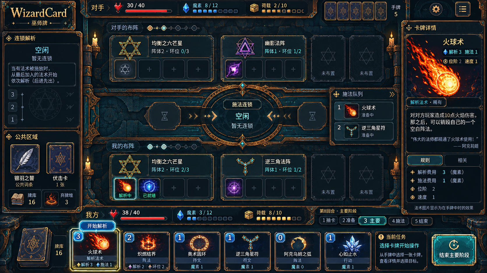
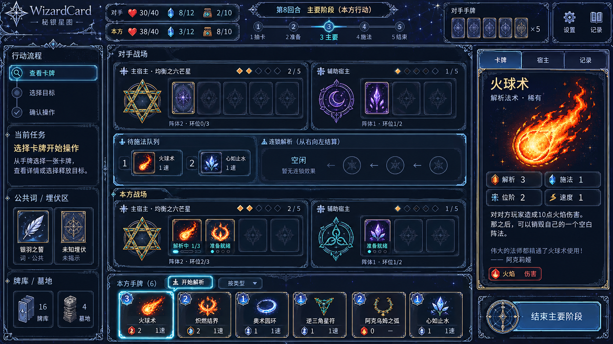
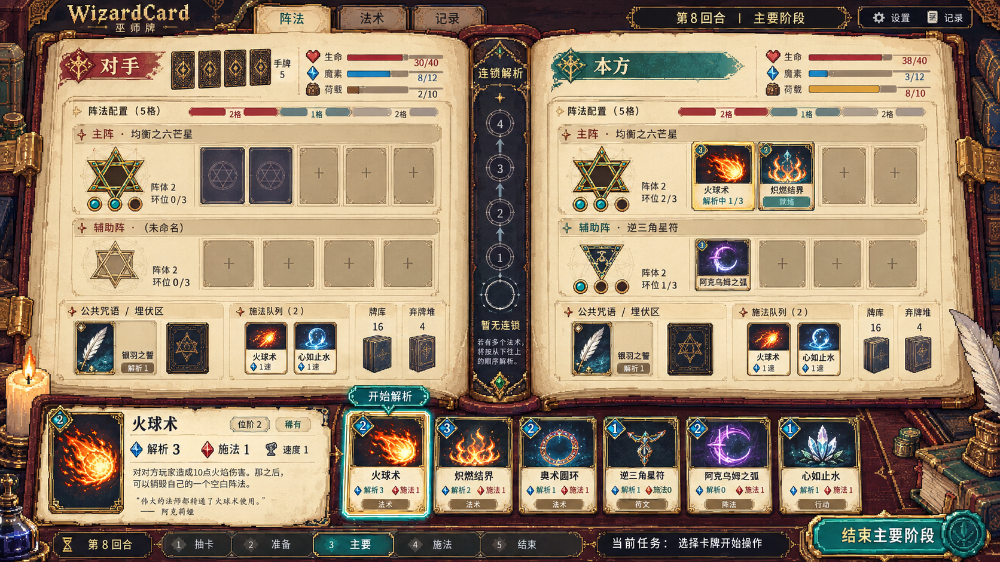

WizardCard · 三版 UI 结构样稿
2026-10-07 · 根据“当前界面结构也需要重构”重新设计。三版展示阵法/宿主法术、连锁、施法队列、手牌、资源和详情，比较不同布局与美术方向。
A · 古铜仪式战场
上下双方阵法分组、中央施法区、左侧连锁和公共区、右侧只读详情；资源条贴近各自场地。
战场氛围最强，装饰密度较高，定稿时需要控制角饰和纹理对比。

下载原图 · 1672×941
B · 秘银星图工作台
左侧操作步骤和当前任务、中间宿主法术分组及施法队列、右侧分页详情、底部手牌。
信息层级与任务引导最明确，适合复杂对局和规则学习。

下载原图 · 1672×941
C · 双页羊皮卷魔典
左右书页承载对手与本方，中央书脊显示连锁，底部集中选中卡牌详情、手牌和阶段操作。
结构变化最大，主题辨识度高；定稿时需要检查两侧身份和底部中文阅读空间。

下载原图 · 1672×941